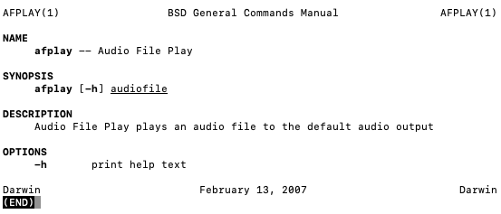

Tue 09 Feb 2021
Reading time: (~ mins)
I'm always looking for ways to make my life simpler and less cluttered. The latest epiphany I had was to reduce inefficiencies of music playing. I used to exclusively listen to tracks on Spotify/Youtube but for a number of years now I have gotten "hard" copies of all my music so it is always accessible, as I've grown to appreciate an offline-first approach. VLC was the application I used to play my music but it is overkill, wasting CPU time rendering a GUI and who knows what else when all I want is to power the speakers.
That lead to a short adventure of googling how to manually play music on Mac OSX. There are a bunch of open-source projects aimed at creating a minimal music player but I really wanted nothing but audio playing. I don't need an interface of any kind. I have a folder of music, I want it shuffled and pumped out into the air.
With my luck I avoided having to write my own app as Mac OSX comes with a tiny little toy called afplay. It has a beautiful man page:
What more could anyone ask for. To turn this into the music player of my dreams all I needed was to alias 4 simple commands in my ~/.bash_profile and then I had my own tiny terminal troubadour:
play(){
trap 'murder' 1 3 9 # cleanup when terminal closes
SAVEIFS=$IFS
IFS=$'\n' # allow for filenames with spaces
music=$(find ~/Downloads/stuff/vids | shuf) # shuffle music files
for f in $music
do
afplay "$f" # play the audio
done & # background the process
IFS=$SAVEIFS
clear
}
# kill the audio player to proceed to the next track
alias next='killall afplay && clear'
# stop the background process and all further playing
alias stop='kill %?afplay && sleep 0.1 && clear'
# track down and kill everything in sight
alias murder='kill %?afplay; while killall afplay; do :; done'
And to kick it off:
play
Sitting at ~1% CPU usage, what more can you ask for. Enjoy :)